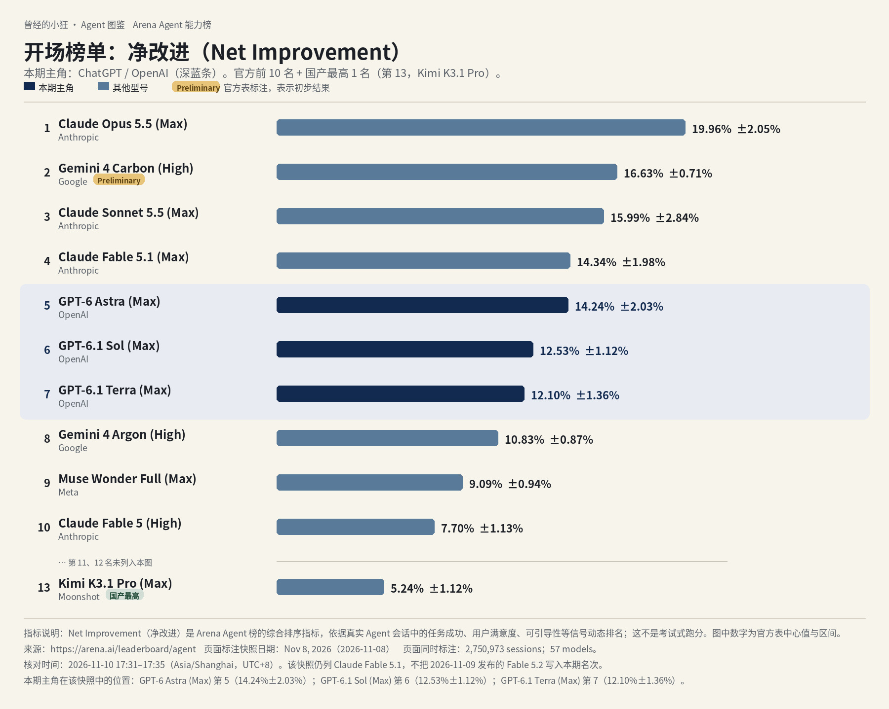
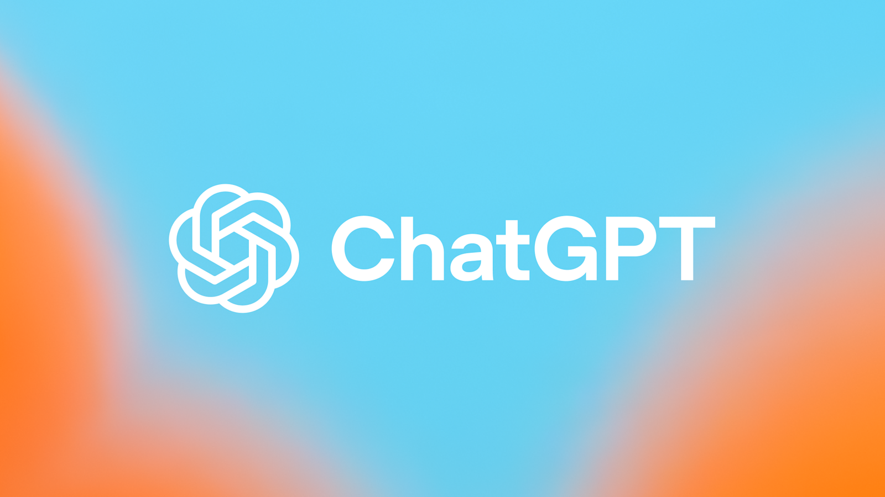
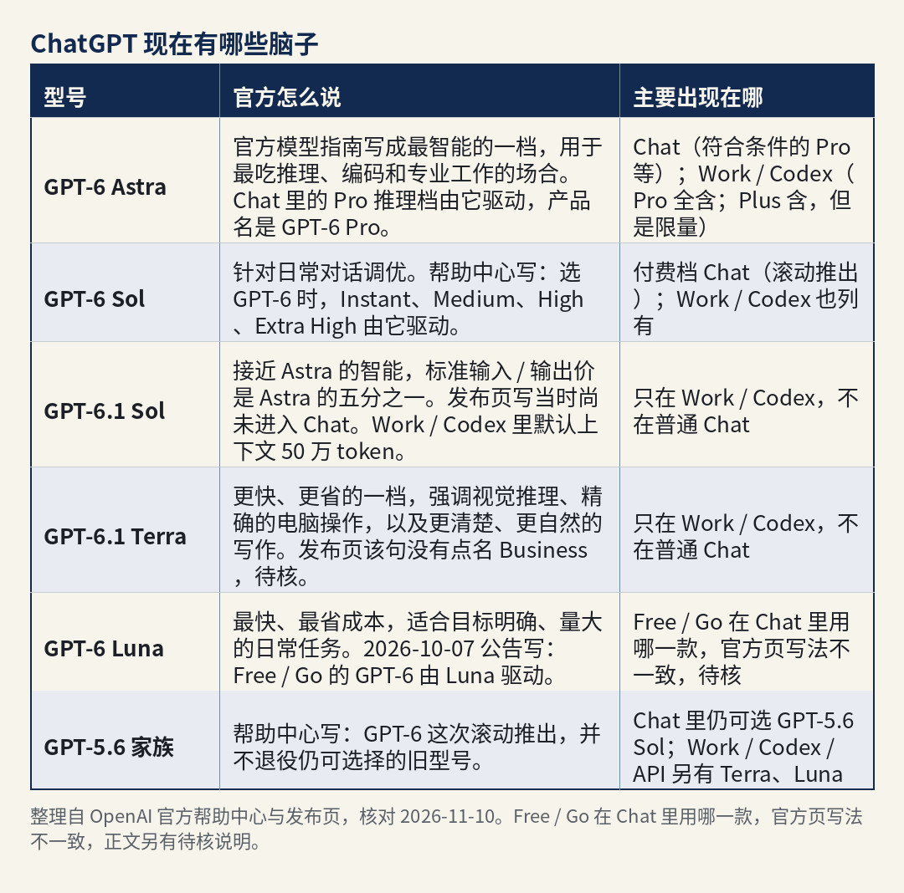
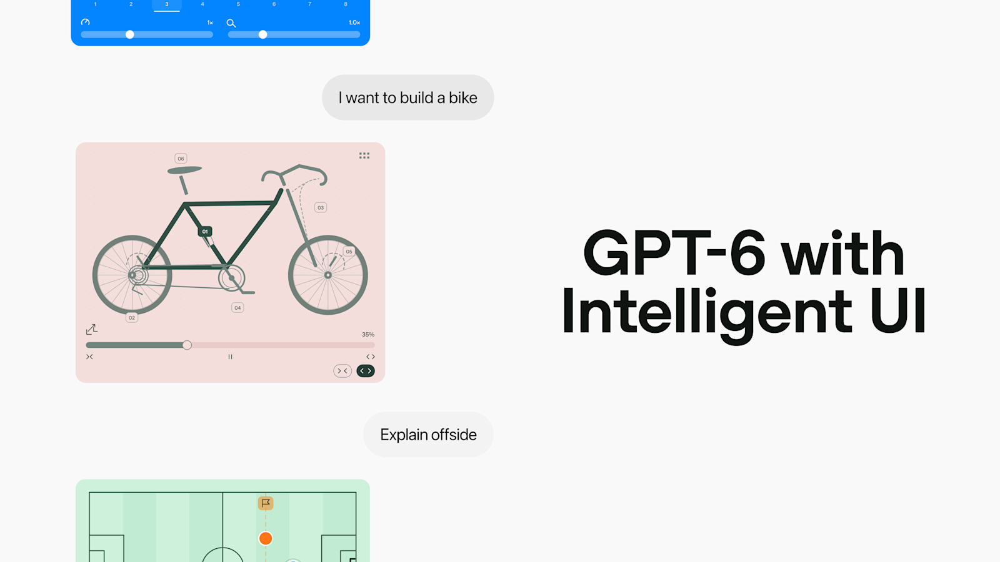
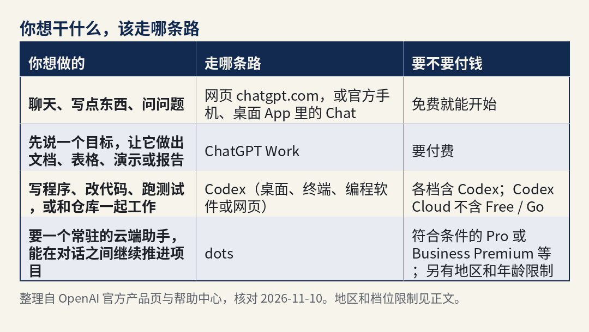
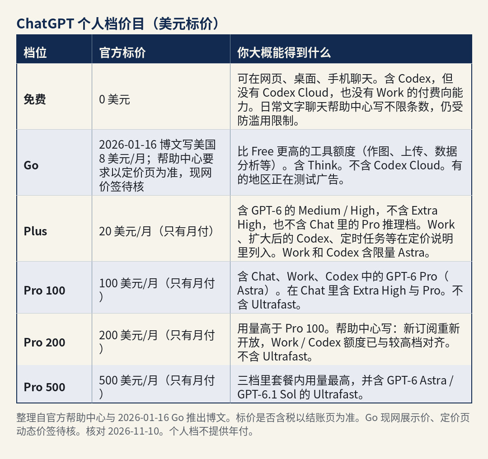

曾经的小狂 · Agent 图鉴 第 2 篇
你先别急着记名字。先看这张图。

全球 Agent 前十（Arena Agent 榜 · 净改进，2026 年 11 月 8 日快照）。深蓝条为本期主角。数据来源：arena.ai/leaderboard/agent。Fable 5.2 未进入本期快照。核对日期：2026-11-10。
这张不是传统那种刷题跑分榜。Arena 的 Agent 榜，看的是真实会话里，一个助手把事情做完之后，综合表现到底好了多少，指标叫「净改进」。图上是 2026 年 11 月 8 日那一版快照，一共记了 2,750,973 场会话、57 个模型。核对时间是 2026 年 11 月 10 日 17:31–17:35（Asia/Shanghai，UTC+8）。数据来自 arena.ai/leaderboard/agent。
你把深蓝那几条扫一眼：第五名是 GPT-6 Astra，净改进 14.24%±2.03%；第六名是 GPT-6.1 Sol，12.53%±1.12%；第七名是 GPT-6.1 Terra，12.10%±1.36%。前十里，有三个席位都是 OpenAI 的 GPT。第 2 名 Gemini 4 Carbon (High) 带官方 Preliminary 标注，表示初步结果。这份快照是 11 月 8 日的，Claude Fable 5.2 第二天才发布，没有进这期名次，图里也不写。
今天要讲的主角，就是这三条背后的那一个产品：ChatGPT。公司叫 OpenAI。
这个名字你大概听过。不过现在的产品线，已经不只是一个对话框——后面要讲的 Work、Codex、dots，都是在聊天之外，让它连续把事情做完的入口。这篇按 2026 年 11 月 10 日的官方页面整理。

来源：ChatGPT 官方页面 Open Graph 图，核对 2026-11-10。
说白了，ChatGPT 是 OpenAI 做的 AI 助手。免费就可以在网页或手机上跟它聊天、问问题、让它写点东西。付了费，思考可以更用力，也可以让它做完一份文档或幻灯，或者帮你写程序。
后面这种「你说目标，它自己拆步骤、连续做下去」的能力，行业里叫 Agent。写程序、交一份完整的材料，靠的往往就是这个。
它的「脑子」是 OpenAI 自己做的 GPT 系模型，不是借别人家的。后面你会听到 Astra、Sol、Terra、Luna，都是同一家族里不同的型号：有的更强、更贵，有的更快、更省。ChatGPT 是产品的名字，GPT-6 是现在这代脑子的家族名，两者不是同一回事。
这篇是介绍，不是评测。版本、价格、能不能用，都对过 2026 年 11 月 10 日的官方页面。我没上手用过的，不会写成我的体验。官方页说法不一致的地方，我会把两处都写出来，并标「待核」。
下面只写核对日打开的官方页里能对上的节点，没打开专页的创立年份、融资轮次不补。
官方 About 页（openai.com/about）写：OpenAI 是一家 AI 研究与部署公司，使命是确保通用人工智能（AGI）——官方把它解释为普遍比人更聪明的 AI 系统——造福全人类。同一页还写现行结构：非营利的 OpenAI Foundation，治理作为公共受益公司运营的 OpenAI Group，使命由这两个组织一起推进。
和本期直接相关的产品节点是：2026 年 9 月 22 日发布 GPT-6 Sol 和 GPT-6 Luna；9 月 29 日发布 GPT-6.1 Sol，同一天介绍 dots；10 月 7 日把 GPT-6 与 Intelligent UI 推向 Chat。GPT-6 Astra 的发布页在核对日仍在线，页顶更新指向了 9 月 22 日和 9 月 29 日；最初发布日该页抓取文本里没有稳定读出，我标了待核，不把某一个日期写成已核事实。GPT-6.1 Terra 的发布页同样已打开，精确发布日也标待核；dots 介绍页在 2026 年 11 月 3 日的更新里写，已把 Terra 纳入 dots 所用的模型家族。
官方多次写明：日常聊天的 Chat，和交成品、写代码的 Work / Codex，两边能选的型号并不完全一样。
怎么选，我按官方自己的说法整理，不是我用过之后的判断。

型号对照。整理自官方帮助中心与发布页，核对 2026-11-10。Free / Go 在 Chat 里用哪一款，官方页写法不一致，正文另有待核说明。
如果只先记两句：在 Chat 里选 GPT-6 时，Instant、Medium、High、Extra High 由 GPT-6 Sol 驱动；Pro 推理档的产品名是 GPT-6 Pro，由 GPT-6 Astra 驱动。这两句的出处是帮助中心「GPT-6 and other models in ChatGPT」（help.openai.com/en/articles/20001354-gpt-6-and-other-models-in-chatgpt）。2026 年 11 月 10 日 19:27 重抓时，页面原话仍在：“When GPT-6 is selected, GPT-6 Sol powers Instant, Medium, High, and Extra High; Pro uses GPT-6 Pro, powered by GPT-6 Astra.”
所谓 Instant 到 Extra High，可以先理解成「这次思考要多用力」。用力越大，通常越慢、也越吃用量。Plus 含 Medium 和 High，不含 Extra High，也不含 Chat 里的 Pro 推理档。
GPT-6 Astra。来源：官方发布页 Open Graph 图，核对 2026-11-10。
GPT-6 Sol 与 Luna。来源：官方发布页 Open Graph 图，核对 2026-11-10。
Free / Go 在 Chat 里用哪一款：两处官方说法不一致，并陈，待核。
2026 年 10 月 7 日的公告「GPT-6 and Intelligent UI for everyone」（openai.com/index/gpt-6-for-everyone）写：付费档由 GPT-6 Sol 驱动，Free 与 Go 由 GPT-6 Luna 驱动；当日先向 Plus / Pro / Business / Enterprise 的 Chat 滚动，次日扩到 Free / Go。同日的 October 系统卡也按 Chat 中的 GPT-6 Sol / Luna 来写。
帮助中心同一篇 20001354（R1 重抓时页头显示 Updated 11 days ago）写：Free 与 Go 没有 GPT-5.6 Sol，默认是 GPT-5.6 Luna，Think 也由 GPT-5.6 Luna 驱动。Go 的专文（核对日显示 Updated 4 hours ago）同样写：Think 用 GPT-5.6 Luna，Go 不含 GPT-5.6 Sol。
我不在这两套说法里替你裁定哪一页已经过时。你在产品里看到的，以当时账号里的模型菜单为准。
Intelligent UI。官方的说法是：GPT-6 在 Chat 里可以把文字、视觉和可交互组件组合在一起，不必写特殊提示；回答也可以边想边出现。帮助中心写：这些能力在 Web 和已更新的应用上，于 GPT-6 的 Instant 到 Extra High 滚动推出；Pro 推理档（由 Astra 驱动）没有这项能力。旧版 macOS / Windows 桌面应用也不支持，官方建议改用网页。它没有单独的用量配额，仍走各档已有的模型和工具额度。

GPT-6 与 Intelligent UI。来源：官方公告 Open Graph 图，核对 2026-11-10。
token 是计费和容量的单位，你可以先把它理解成「用了多少文字量」。比如 GPT-6.1 Sol 在 Work / Codex 里的默认上下文是 50 万 token，意思是一次能「看进去」的内容可以非常长。
开发者如果走 API，按每百万 token 计费。大概量级是：Luna 最便宜，Terra 居中，Sol 与 6.1 Sol 再往上，Astra 最高。标准输入 / 输出（及已写明的缓存命中价）是：Astra 10 / 50 美元（缓存命中 1.00 美元）；GPT-6.1 Sol 2 / 10 美元（缓存命中 0.10 美元）；GPT-6 Sol 2 / 10 美元（发布页未在同一张价表里给出缓存命中价，6.1 Sol 发布页写它的缓存输入价比 GPT-6 Sol 的缓存价低 50%）；GPT-6.1 Terra 1 / 5 美元（缓存命中 0.05 美元）；Luna 0.10 / 0.50 美元（缓存命中 0.01 美元）。来源是 2026-09-22 的 Sol / Luna 发布页、GPT-6.1 Sol 发布页、GPT-6.1 Terra 发布页，以及 2026-10-02 的 GPT-6 家族模型指南 openai.com/index/practical-guide-building-gpt-6，核对日期 2026-11-10。
另外几笔也按官方页写：Fast mode（API）在 Astra 的发布页写，最高大约是 Standard 的 2 倍速度，按标准价 2 倍计。Ultrafast 在 Codex / 部分 API 场景提供；个人档里，帮助中心写：在 Pro 各档中，只有 Pro 500 含 Ultrafast；计入套餐内用量时，按该模型 Standard 的 8 倍消耗，之后用积分则按 Standard 积分价的 6 倍。列表价是否含税、能否随账户所在地变化，以 API 定价页和结账页为准。官方声明，价格可以调整。
聊天。打开网页 chatgpt.com，或装官方的 iOS、Android、桌面应用，就可以对话。免费档也能聊。官方把 Chat 写成偏快的对话：提问、搜索、头脑风暴、日常问题。付费档在 GPT-6 滚动到位后，还可以用上面说的 Intelligent UI。Free 与 Go 的日常文字聊天，帮助中心写是不限条数的，但仍受防滥用限制；上传、作图、语音、数据分析等另有额度。
ChatGPT Work，用来把一件更长的事做完。官方帮助中心把它写成一个 Agent：面向更长、多步的工作，以及做完的成品，例如研究一个题目、分析材料，或做出文档、表格、演示、报告、Site。可以在网页和手机上用（须是符合条件的付费档），桌面端在计划和空间允许时也可以用；桌面端经你允许后，还能用本地文件和桌面应用。云端的 Work 对话可以在网页、手机、桌面之间接着看。也可以设定时任务，或在符合条件时用事件触发（例如授权后的 Gmail、Slack、GitHub 动态）。帮助中心还写：Voice 可以在网页和手机的 Work 里用，桌面端的 Work 与 Codex 也可以用语音。
你如果还在找旧的「Agent 模式」，帮助中心专文「ChatGPT agent」（help.openai.com/en/articles/11752874-chatgpt-agent，文号 11752874）开篇已经写：ChatGPT agent is no longer available. 官方要你改用 Work 做更长的多步任务和成品；需要浏览网页的，另看云端浏览器说明。2026 年 11 月 10 日 19:27 重抓时，Overview 第一句仍是这句；但同一页的副标题还是旧版 “Learn about the features of ChatGPT agent mode and how to get started.”，后面也还留着「如何开启 agent mode」和按月条数（Plus 40、Pro 400 等）的旧段落；Pro 介绍页也还出现 “agent mode” 字样。这是官方页面自身的不一致，我标了待核——介绍时以该文开篇的「已不可用、改走 Work」为准，不把旧条数当成当前规则来推荐。发表前须再重抓这一页。
Codex，给写程序的人用。这是官方的编程 Agent：写代码、改代码、跑测试和命令、做代码评审，以及和仓库一起工作。产品页写：包含在 ChatGPT 套餐里；可以在 ChatGPT 里、编辑器和终端使用，账号打通。入口包括 ChatGPT 桌面应用的 Codex 模式、Codex CLI、IDE 扩展、网页，以及 Codex Cloud（在 OpenAI 托管的电脑上跑，电脑休眠也可以继续）。帮助中心写：Codex 包含在各档，含 Free 与 Go；Codex Cloud 只给符合条件的 Plus、各档 Pro、Business、Enterprise、Healthcare、Education，不含 Free 与 Go。Astra 要用 Codex CLI 0.153.0 或更高，同一篇帮助中心 20001354 有原话：“Astra requires Codex CLI version 0.153.0 or newer.” 桌面应用也需要更新到最新版。
Codex。来源：官方产品页 Open Graph 图，核对 2026-11-10。
dots，常驻的云端助手。官方把它写成 always-on 的 Agent：有自己的云端电脑和浏览器，能在对话之间继续推进项目，也可经你允许连接本机。2026 年 9 月 29 日的介绍页写，由 GPT-6 Astra 驱动；2026 年 11 月 3 日的更新写，已把 GPT-6.1 Terra 纳入，不同部分的工作可以调用不同模型。官方举例包括准备演示、根据反馈改应用、根据新证据更新分析等。入口在 ChatGPT 的桌面、网页和手机；也可以在 Slack、Teams 里对话，短信能力当时还在有限预览。帮助中心写：和 dot 的对话不计入 ChatGPT 的用量；但若它把任务交给 Work 或 Codex，那些任务仍按原规则计。第一枚 dot，介绍页写含在符合条件的 Pro 或 Business Premium 套餐里，不另收费。官方也提醒：dots 仍可能出错，重要结果需要你自己看过。
dots 还有额外限制。帮助中心写：个人 Pro 向 18 岁及以上、且市场不包括欧洲经济区、瑞士和英国的用户滚动推出；Business Premium 在 ChatGPT 支持地区，还要满足工作区条件；Enterprise / Edu / Healthcare 当时处于管理员预览（2026-11-04 至 11-18），之后默认打开、除非管理员退出。带阿联酋数据或推理驻留的工作区不可用。个人和 Business Premium 是逐步放开，可能要几天才看到。创建可在桌面应用、桌面网页或已更新的手机应用里完成，不支持手机网页。
dots。来源：官方介绍页 Open Graph 图，核对 2026-11-10。
云端浏览器、深度研究、定时任务、语音。浏览类工作，官方在 agent 专文里指向云端浏览器说明。Deep research、定时任务、自定义 GPT、Projects，出现在定价对照和各档说明里，具体哪一档有、额度多少，以定价页现网为准。Voice 在 Chat 与 Work / Codex 里的计量规则不同，帮助中心写：常规 Chat Voice 有单独额度，不会消耗 Codex 用量。
用一张表，把「你想干什么，该走哪条路」收一下：

使用路径对照。整理自官方产品说明，核对 2026-11-10。
1. 先看你所在的地方能不能用。官方帮助中心有一篇 ChatGPT Supported Countries（help.openai.com/en/articles/7947663-chatgpt-supported-countries）。我在 2026 年 11 月 10 日打开时，名单里没有中国大陆，也没有见到香港、澳门；台湾在列。页头显示 Updated 19 days ago。官方写：在名单以外的地方访问或提供访问，账户可能被阻止或暂停。能不能真正注册、扣款成功，以当时该名单和结账页为准，我这里不打包票。这篇名单在「Updated 19 days ago」所覆盖范围之外，有没有未写进该页的变更，标待核。
2. 如果打得开，就去 chatgpt.com 注册，或下载官方 App，用官方登录方式注册。可以先用免费档，看能不能登录、能不能聊天。
3. 确认免费档够不够用，再决定要不要付钱。要用 GPT-6 的更高思考档位、Work、扩大后的 Codex，或 Pro 推理档（Astra），再按定价对照升到对应的付费档。不必一上来就订最高档。Plus 在 Settings 里走 Upgrade Plan → Get Plus。
4. 要用 Work：在网页或手机上选择 Work，说明要交的成果，补上需要的文件和限制。在桌面端，先选 ChatGPT，再用开关切到 Work；要用本地文件夹，须在桌面应用里授权。
5. 写程序的人，再用 Codex。用 ChatGPT 账号登录所选客户端。终端里，进入项目目录后运行 codex，按提示登录。Cloud 要先在桌面或网页创建并发布环境，再在手机上选用。CLI 要用 Astra，先确认版本不低于 0.153.0。不要从非官方来源复制安装命令。
6. 用量在账户的 Settings → Usage 查看（Codex 里是 Usage & Billing 或 /status）。触顶之后，可以等重置、换一档可用模型，或在符合条件时购买 credits。官方写明：客服不能帮你重置额度。
账号上，个人套餐和 Business / Enterprise 工作区是分开的。Codex 也可以改用自己的 API 密钥，那时按 API 计价，不再走 ChatGPT 套餐用量。
模型能不能用中文对话，我打开的官方页没有写成一条单独的语言限制，我也不额外打包票。
价格一律按官方美元标价写。chatgpt.com/pricing 在核对日可以打开功能对照，但是动态组件，部分价签在抓取时没有稳定读出；发表前请再打开定价页看一眼当前展示价，建议随手截一帧含各档价签的现网界面，并注明截图日期。标价是否含税，以结账页为准；官方声明，价格可以调整。个人档（Go / Plus / Pro）帮助中心写：不提供年付，也不能提前一次付好几个月。人民币多少钱、你那边能不能扣款，官方页没有现成价目，我不猜。
个人档在 2026 年 11 月 10 日是这样的：

个人档价目。整理自官方帮助中心与 2026-01-16 Go 推出博文，美元标价。Go 现网展示价、定价页动态价签待核。个人档不提供年付。核对 2026-11-10。
「不限量」要读官方限制。Pro 介绍页有 “Unlimited messages and uploads” 这类写法；同一套帮助中心又写：Pro 含的任何不限量访问都受防滥用限制；GPT-6 Pro 本身有用量上限，订阅不等于可以无限用 Astra。高峰期、模型、任务长度和速度档（Fast 按套餐内用量 2.5 倍计，Ultrafast 8 倍计）都会改变实际能做完的量。
Plus 在 Work 和 Codex 含 Astra，但是限量。来源是 Codex 定价页 developers.openai.com/codex/pricing（308 跳转至 learn.chatgpt.com/docs/pricing），2026 年 11 月 10 日 19:28 读取：表格写 Plus 每 5 小时本地消息估算 5–45 条，页面注明这些估算不是固定上限。
Pricing 页还写 Pro 含每月 API credits，用于自建应用和 Agent；抓取时具体额度数字没有稳定读出，待核，以定价页现网为准。
如果是团队，据 ChatGPT Business overview（help.openai.com/en/articles/8792828-chatgpt-business-overview）：Business Standard 月付 25 美元/座/月，年付 20 美元/座/月，至少 2 座，含 ChatGPT、Work 和 Codex，可用灵活积分在套餐额度之外续用。Business Premium 月付 125 美元/座/月，年付 100 美元/座/月，Work 与 Codex 用量更高，官方写没有 5 小时用量限制，可与 Standard 混配；dots 对 Business，官方写的是 Premium。Enterprise 联系销售。面向院校的 Edu、教师计划、非营利折扣，官方单列，这里不展开价目。
订阅费不含默认的全部 API 用量。Work / Codex 在用完套餐内额度后，符合条件的个人档可以买 credits，企业和教育另有 Rate Card。
个人档支付方式，定价页 FAQ 写可用主流信用卡；Enterprise 可联系销售谈发票等。能不能用别的方式，以结账页为准，没有写明的渠道我不补。
官方支持地区名单（帮助中心，核对于 2026-11-10）没有列入中国大陆，也没有见到香港、澳门。中国大陆能不能订阅、人民币税后价是多少：以官方结账页和地区说明为准。 我所用的官方页里，没有中国大陆的人民币税后价目表，这里不猜。
更对得上官方描述的，大概是这些人：在官方支持地区，用网页或 App 日常对话，并且接受付费使用 GPT-6 更高思考档位的个人（Plus 或以上）；主要工作是编程、排错、和仓库一起改代码，愿意用 Codex（免费档可以入门；要 Cloud、更高用量，需 Plus 或以上）；想先说一个目标，让它做出文档、表格、演示或报告，也愿意付费用 Work；人在 dots 开放的市场、已满 18 岁、已经是 Pro（或 Business Premium / 已开启的 Enterprise），也接受它仍可能出错、重要步骤要你确认，可以看一看 dots；要在自己产品里调用 GPT-6 家族，能接受按 token 计费的开发者（API）。
先别急着付钱的，大概是这些情况：所在地不在支持名单里，包括名单未列入的中国大陆等，不要假定一定能完成注册或扣款；只想用免费档跑 Work，或用 Codex Cloud——Work 的完整能力在付费档，Codex Cloud 不含 Free / Go；在 Plus 里就要用 Chat 的 GPT-6 Pro / Astra，或 Extra High——官方对照表写这两项不在 Plus，Astra 在 Plus 里出现在 Work 和 Codex，而且是限量；在 Pro 100 / Pro 200 里就要 Ultrafast——官方写，在 Pro 各档中只有 Pro 500 含；在欧洲经济区、瑞士、英国的个人 Pro 用户，现在就想用 dots——帮助中心写明这些市场暂不在个人 Pro 的开放范围；还想找到「Agent 模式」那个旧入口，并按旧的每月 40 / 400 条来规划——帮助中心开篇已写该产品不可用，改走 Work；旧段落是否仍残留在界面里，待核，不要按旧表下单。
同类产品里，大家常听到的还有 Anthropic 的 Claude（本连载第 1 篇）、Google 的 Gemini、Grok（下一篇）、月之暗面的 Kimi。都是「自己有模型，再做成能聊天或能干活的产品」。这里只点名，不评哪个更好。
先看那张榜：前十里有三个 GPT，分别排在第五到第七。ChatGPT 是 OpenAI 做的 AI 助手，脑子是自家的 GPT-6 家族。免费可以聊天；要把一件更长的事做完，走 Work；写代码走 Codex。在 Chat 里，Instant 到 Extra High 由 Sol 驱动，Pro 推理档由 Astra 驱动。旧的 Agent 模式已改走 Work。钱按美元官方标价来。国内能不能订，以官方名单和结账页为准，我这里不保证。
产品会改价、改规则、改默认模型。你要下单或安装前，再打开 chatgpt.com/pricing 和对应帮助中心看一眼。
本文事实核对至 2026 年 11 月 10 日。主要来源：Arena Agent 榜 arena.ai/leaderboard/agent（快照 2026-11-08，核验 17:31–17:35）；帮助中心 20001354（R1 重抓 19:27）、11752874（R1 重抓 19:27）、Plus / Pro / Go / 地区名单专文；Codex 定价页 learn.chatgpt.com/docs/pricing（R1 19:28）；各 GPT-6 发布页与 openai.com/about。配图除开场榜图和三张对照表为按官方资料自制外，其余为官方 Open Graph 图。